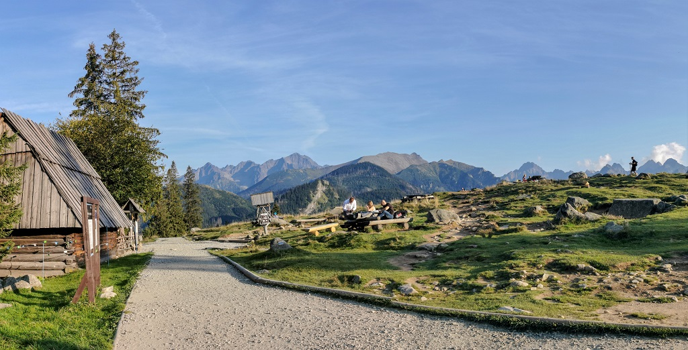

Jaskinia Raptawicka
< Wróć
Rusinowa Polana to kultowe miejsce w Tatrach Wysokich. Wiele osób właśnie tutaj zaczyna swoją tatrzańską przygodę, a później częstokroć wraca, by podziwiać niebanalną panoramę górskich olbrzymów. Rusinowa Polana znajduje się pomiędzy Gęsią Szyją a Gołym Wierchem, na grzbiecie łączącym Tatry z Pogórzem Bukowińskim. Na miejscu krzyżują się dwa szlaki. Zielony z Wierchu Poroniec na Halę Gąsienicową oraz niebieski z drogi Oswalda Balzera (Zazadne) od Palenicy Białczańskiej. Dotrzeć tutaj można dość łatwo i szybko. Dziś zapraszamy Was na spacer najprostszym wariantem, prowadzącym od Wierchu Poroniec.
